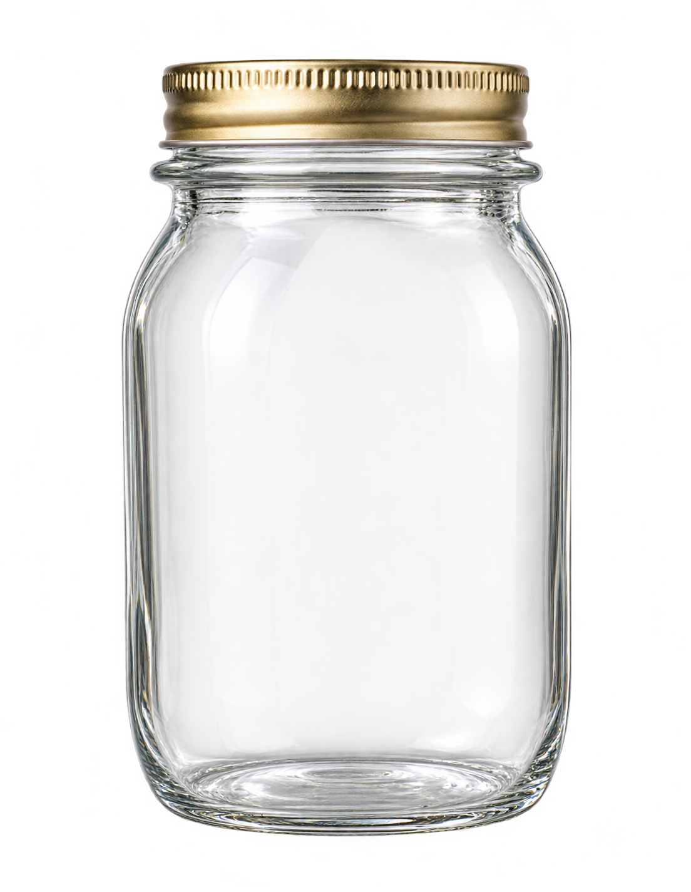

A small place for big hopes
✦ A little wonder, made together ✦
Some things are
worth wishing for.
Fold a thought into a star. Leave it here, or send this jar to someone you love.
made of little
bright things
bright things

✳your wishing jar
✦
your first wish
is waiting
your first wish
is waiting
tap a star to open a wish ↗
01every wish
has a home
has a home
A private little link, yours to share with anyone.
Leave something lovely for the next person.